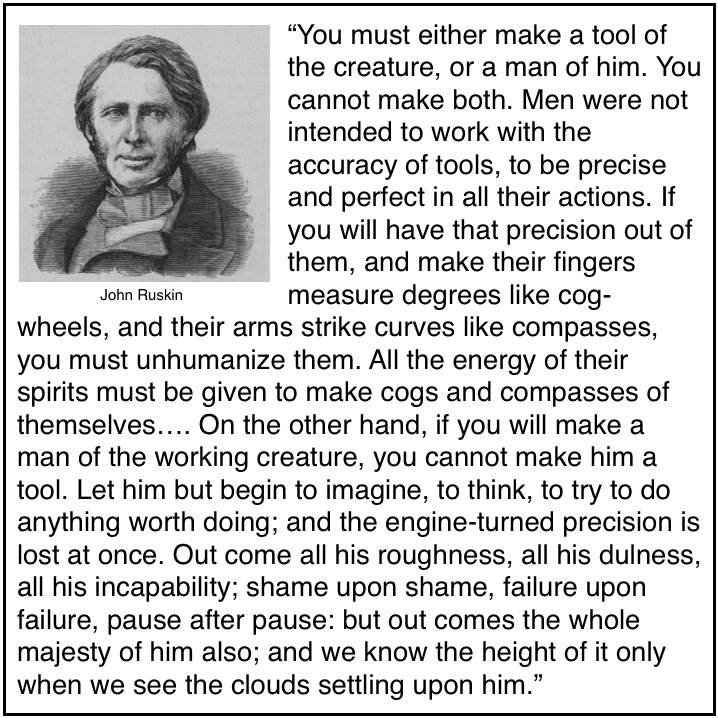

John Ruskin - Tool vs Man

I love this:
You must either make a tool of the creature, or a man of him. You cannot make both. Men were not intended to work with the accuracy of tools, to be precise and perfect in all their actions. If you will have that precision out of them, and make their fingers measure degrees like cog-wheels, and their arms strike curves like compasses, you must unhumanize them. All the energy of their spirits must be given to make cogs and compasses of themselves....On the other hand, if you will make a man of the working creature, you cannot make him a tool. Let him but begin to imagine, to think, to try to do anything worth doing; and the engine-turned precision is lost at once. Out come all his roughness, all his dulness, all his incapability; shame upon shame, failure upon failure, pause after pause: but out comes the whole majesty of him also; and we know the height of it only when we see the clouds settling upon him.
Management advice, boiled down to one quote.
- Prior: QLMarkdown
- Next: Paper Piranha Plant Flowers